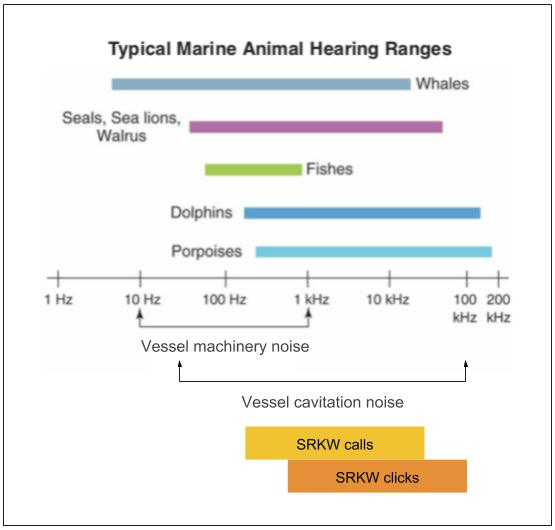
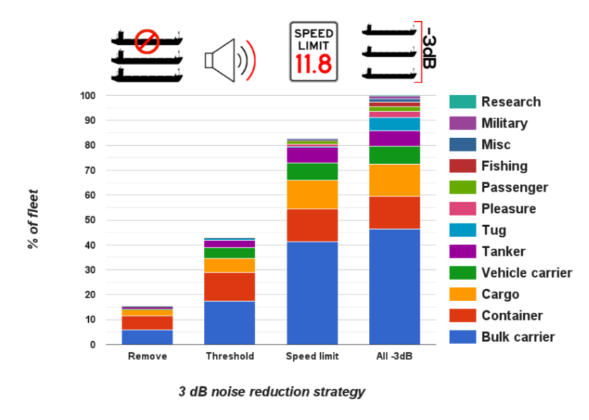
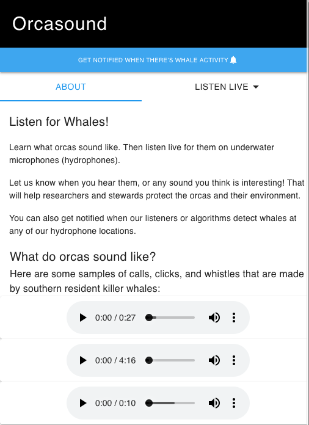
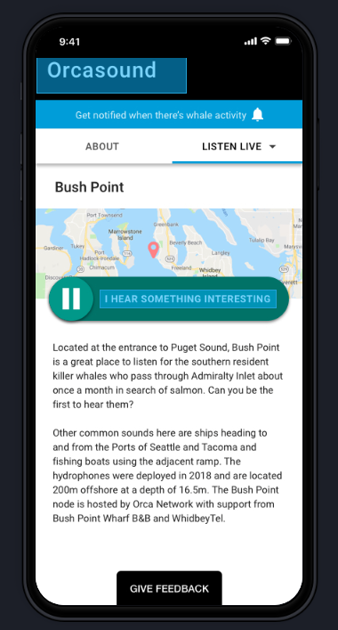

Impacts of underwater noise on orcas

Scott Veirs, Orcasound hydrophone network
Clallam MRC Orca ForumMay 10, 2019, Port Angeles
Zones of bioacoustic impact from noise
|

|
We know: SRKWs respond to noise
| 2003: U.S. Navy uses sonar in Haro Strait with SRKW behavior change observed by Center for Whale Research |
|
 |
 |
| 2009: SRKWs "speak up" in noise from nearby boats (Holt, Noren, Veirs, Emmons & Veirs) |
Vessel noise can mask both calls & clicks

Frequencies of vessel noise overlap
|

Squeaky ship: |
Vessel noise mitigation
There are many ways to "more than mitigate" vessel noise.
 |  |
Operational (temporary) and technological (permanent)
Orcasound's network, new nodes and app
 |
 |
 |
15 years of citizen scientists listening for whales in the Salish Sea
Thanks to all the backers of the 2017 Kickstarter, plus our app key developers/designers to date:
Paul Cretu, Skander Mzali, Steve Hicks, Tyler Crisafulli, Nóra Mészáros, and Liam Reese
Paul Cretu, Skander Mzali, Steve Hicks, Tyler Crisafulli, Nóra Mészáros, and Liam Reese
Listen for whales at live.orcasound.net!
Listen for whales
For free live-listening, browse to:
live.orcasound.net
 |
 |  |
New player was released to the public on November 1. Stay tuned for more features coming this summer at: beta.orcasound.net
/